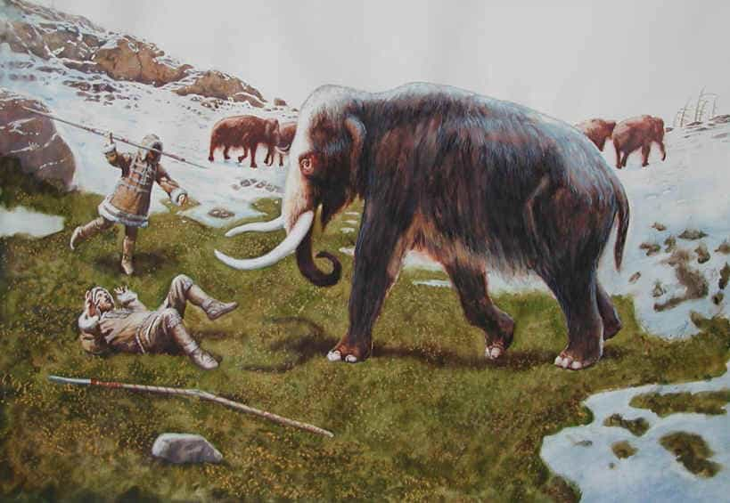

is a Spanish world traveller and tough fiber adventurer currently living in a Feminist country.


Hypergamy: a woman’s natural preference for a male that is of higher status than other men and also higher status than herself.
Among the wide range of relationships that most societies practiced throughout the history of man, monogamy has been one of the most popular, but anthropological research suggests that it has only been around for a few thousands of years. Back in the stone ages, when hunter-gatherer tribes populated the world, monogamy didn’t exist. Polygyny (the practice of having more than one wife at one time) was one of the most common forms of male-female association. Homo Sapien men naturally surrendered to their polygamous nature. The evidence of the existence of marriage of a single male to multiple females has been present in all human cultures through man’s history.

Intensive polygamy by wealthy, powerful males seems to be an optimal male reproductive strategy, as powerful males are able to control very large numbers of females. But the reality is, polygamy is a high stakes reproductive game for men, with some men winning big (alphas) and others losing big (betas). Stakes are pretty high for women as well. Females must invest greatly in reproduction – pregnancy, lactation, and often childcare that required an extraordinary amount of resources and time.
In short, polygamy actually advantages some men over other men, and some women over other women. Only a minority can achieve it. It’s a less exaggerated form of “winner takes all” that some species employ (like cattle, lions, or wolves where there is only one reproductively successful male in a group).
First, we should differentiate ecologically-imposed monogamy from socially-imposed monogamy. Ecologically imposed monogamy is usually found in societies that have been forced to adapt to very harsh environments, such as deserts, arctic regions or other adverse climates. The first Homo Sapien tribes that came to Europe established their settlements in the North Eurasian area. These populations were hunters and gatherers, not farmers. In such climates there was considerable pressure for male provisioning of the family. Hunting required experience and years of intensive practice. In other words, it required high-investment parenting. It also required intelligence because the hunting scenario is complex and ever changing.

Under such harsh conditions, it is impossible for males to control a great number of females, and women and their children would require a more committed provisioning from a male. If these conditions persisted for an evolutionarily significant period of time, one might expect to find that the population develops a more equal contribution for each sex, involving beta males into marriage, suggesting a tendency toward monogamy. This perspective is consistent with ecological theory. Under ecologically adverse circumstances, adaptations are directed at coping with the adverse physical environment.
In short, the “Homo Sapiens” survived and prospered while other Hominids (Neanderthals and Homo Erectus) became extinct. It’s not a coincidence that the rise of monogamy matches in time with the agricultural revolution. Many anthropologists consider this point in time to coincide with the rise of civilization, the remarkable transformation of human beings from hunters-gatherers to farmers.

The roots of the nuclear family can be traced back to the pre-industrial era, to the “Simple Household.” Due to shorter life expectancy and high mortality rates in the pre-industrialized world, the survival of a family depended on having a big family that could work on the farmland and how well it organized and utilized its resources. The pre-industrial family was the critical vehicle of Western modernization. Post-industrial families became more private, nuclear and based on the emotional bonding between husband and wife, parents and children.
Despite the preference for polygamy in primitive societies, the institution of monogamy diligently suppressed one of the strongest instincts in humans and led to the creation of the nuclear family model that was so common during the first half of the 20th century, providing welfare, comfort and stability to husband, wife and children.
At the beginning of the 21st century, the situation changed dramatically. There are several indicators that the working social contract between the sexes that served men and women for many centuries has broken. With divorce rates skyrocketing (as high as 70 per cent in some cases), marriages rapidly decreasing and fewer men committing to marriage, the destruction of the nuclear family’s structure seems evident. Almost half of all new-born babies are entering into the world without a full nuclear family in place.
One of latest growing trends is co-parenting. Two independent persons, with no affiliation whatsoever, are coming together for the sole purpose of having a child. A child raised outside family environment. Pet style parenting—the family of the future.
The war against the family has been a regular feature of recent history. Few, if any seemed to have grasped the casualties.

The induced monogamy that has prevailed for centuries and which assured a supply of females to every non-alpha male is long gone. A hypergamous fire has been raging across the world for almost 50 years, since the second wave of feminism in the 1960s. Whereas in an earlier time, the natural instincts of men and women were controlled and channeled properly into marriage, today there is no such cultural/societal barrier, which has led to widespread promiscuity and sexual adventure. Furthermore, the development of technology and proliferation of social media and smartphones have fueled this fire.
The constant bombardment by society, a culture that pedestalizes women while undervaluing men, and the proliferation of smartphones and social networks (WhatsApp, Facebook, Badoo), has caused women to give in to their hypergamous natures. It has created a “Candy Store Effect” for women, whereas basically tons of males are available within a tip of a fingers reach. This results in overconfident, deluded women (in regard to their true Sexual Market Value) who are invited to ride the carousel in their prime years, prejudice and guilt free.
For a man, there is little or no guarantee that a woman will stay faithful during the course of the relationship and won’t “upgrade” him for a higher status male. This combined with divorce laws that marginalize and crush men, is reducing the flow of men that are willing to commit to marriage, increasing the number of men who prefer short flings and one night stands.
In addition, feminism and careerism is causing women to look for a man to settle long after their biological prime. Today’s women spend their youth partying, studying and working. When the time comes and they decide to settle, it may already be too late. This is because women’s “shelf-life” clashes with men’s biological instincts which are naturally inclined to mate with younger women.
Women have not been taught the dangers of constantly seeking a better man. Hypergamy is as equally destructive to civilized society as polygamy. Both are destructive to civilization because they both leave non-alphas (“the foundation of society”) and women with few prospects for a happy marriage. Neither polygamy nor hypergamy encourage loyalty and contentment with one’s spouse; they both demand either “better” or “more,” and nothing else. As the relationship between the sexes goes down the drain, so does civilization.
The idea of the decline of civilization has been the object of much debate and speculation over the years. Civilization as we know it is a complex system created by man that is very much like natural ecosystems which exist in a state of delicate balance. In order for a society to function and prosper, an overwhelming majority have to have a stake in the present and hope for the future. The biology of men and women does not take into account the creation of civilization, only the survival of our genes. Should a man not have a wife or a genetic legacy, he will feel little compulsion to work for the good of the community. Should a woman not have a husband or children, she will become depressed, bitter, and most likely poor. The civilizing effects of the doctrine of monogamy are abundantly clear: for peaceful societies to exist, both sexes must have a stake in it, and when they don’t, society fragments and eventually fractures.
The question now is, can we still fix things or has humanity reached a point of no return.
Read More: Decreasing Marriage Rate Is Hurting Feminism